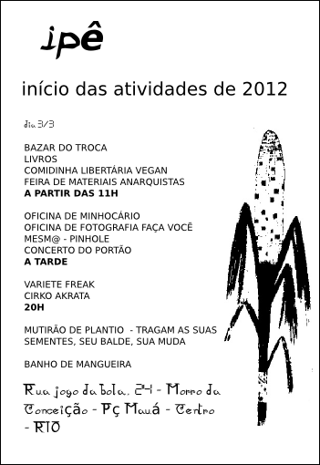

Acontece no próximo dia 03 de março, uma festividade que dará início às atividades no ip:// (ipê), em 2012. Nessa data haverá bazar do troca- troca, feira de materiais anarquistas, livros livres, comiva vegan, oficina de minhocário e pinhole, concerto do portão, mutirão de plantio e circo akrata. O espaço ip:// (ipê) está localizado no morro da Conceição no Rio de Janeiro, agrega ações autogestionadas, além de um constante fluxo de pessoas e idéias.
